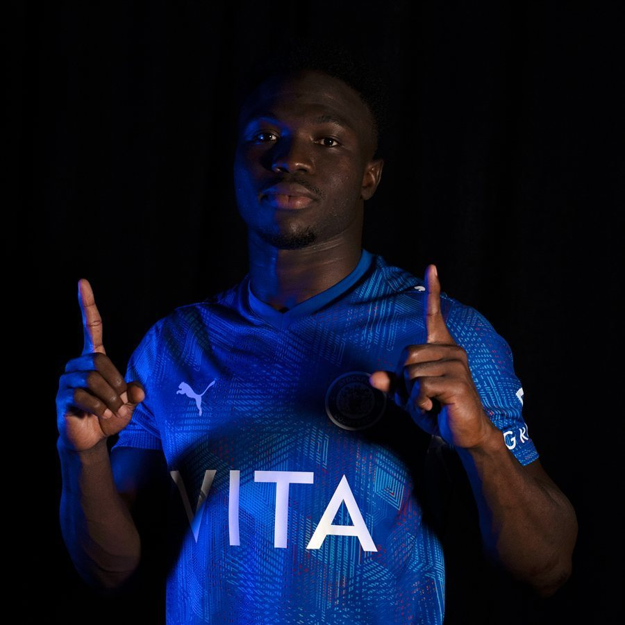

29号 · 前锋
阿达马·西迪贝
Adama Sidibeh
从当地非职业联赛走向苏格兰及国家队的冈比亚前锋，以速度和冲击力见长。
中文资料更新于2026-11-14。历史统计对应所述赛季或公告日期，不代表实时累计数据。
球衣号码：29号
冈比亚国脚
2026年加盟
非职业联赛成长路径
详细介绍
从当地球场走来
西迪贝最初在冈比亚踢球，2022年移居英格兰后，先后效力AFC布莱克浦、奇德尔希思游牧者和沃灵顿赖兰兹。在奇德尔希思的半个赛季，他打进20球，之后又在赖兰兹30场比赛中攻入16球。
苏格兰与国家队
这样的进球表现为他赢得圣约翰斯通的机会。他在苏格兰站稳脚跟，也进入冈比亚国家队；国家队首秀对塞舌尔时便取得进球，前九次出场累计攻入七球。
来到埃奇利公园
2026年1月，他从圣约翰斯通加盟帽匠，随后在联赛对布莱克浦时完成首秀，并在EFL锦标赛4比0击败维尔港时梅开二度。速度与力量相结合，让他能够直接冲击防线。
- 目前职务 / 位置
- 前锋
- 国家 / 地区
- 冈比亚
- 加盟记录
- 2026-01-27
生涯时间线
- 从当地球场走来
西迪贝最初在冈比亚踢球，2022年移居英格兰后，先后效力AFC布莱克浦、奇德尔希思游牧者和沃灵顿赖兰兹。在奇德尔希思的半个赛季，他打进20球，之后又在赖兰兹30场比赛中攻入16球。
- 苏格兰与国家队
这样的进球表现为他赢得圣约翰斯通的机会。他在苏格兰站稳脚跟，也进入冈比亚国家队；国家队首秀对塞舌尔时便取得进球，前九次出场累计攻入七球。
- 来到埃奇利公园
2026年1月，他从圣约翰斯通加盟帽匠，随后在联赛对布莱克浦时完成首秀，并在EFL锦标赛4比0击败维尔港时梅开二度。速度与力量相结合，让他能够直接冲击防线。
- 2026/27赛季
斯托克波特郡前锋。